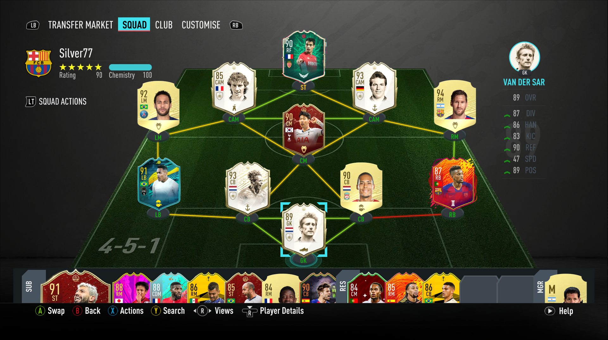

| Videójátékok |
|||
|---|---|---|---|
| és akár mások ellen, online is lehet játszani A játék készítője az EA Sports minden évebn kiadja a játék legújabb verzióját amiben megtalálhatóak az új csapatok/játékosok/stadionok/mezek. Sokan nem értenek azzal egyet hogy miért kell ehhez egy újabb 20ezer forintos játékot kiadni ahelyett, hogy egy frissítéssel megoldanák! Én is közöttük vagyok de mivel szeretem a játékot ezért minden éveben megveszem az újat. |
|
|
építhetsz csapatot bármilyen játékosokból és online játszhatsz másik emberek csapata ellen. Sok játékóra után azt mondhatom hogy elég jó játékos vagyok! Ezt azért mondanám mert a hétvégi ligában álltalában Elite szinten végzek ami a felső 15%. Ezt a tudást nem magamtól szereztem hanem rengetekget néztem a "pédaképemet" Molnár Gábort, aki magyarország legjobb Fifása! Tőle tanultam a legtöbbet. |
|  |
|
A jelenlegi csapatom |